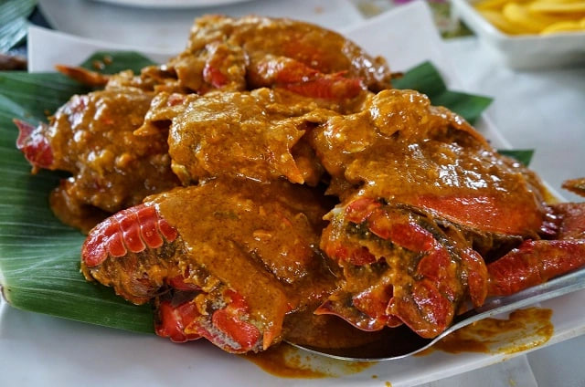

Mindanao
Curacha with Alavar sauce
Curacha is a unique crustacean—a hybrid-looking spanner crab (often called a red frog crab)—found primarily in the waters of Sulu and Zamboanga. It is famously served steamed and then smothered in Alavar Sauce, a legendary, secret-recipe sauce originating from Alavar Seafood Restaurant in Zamboanga City. The sauce is a rich, creamy, and mildly spicy blend of coconut milk, aligue (crab fat), and various Mindanaoan spices.

Gather
Ingredients
- Curacha (spanner crabs) or regular mud crabs, cleaned and halved
- Coconut milk (gata)
- Coconut cream (kakang gata)
- Crab paste (aligue)
- Garlic, minced
- Onion, minced
- Ginger, grated
- Turmeric powder
- Chilies, minced
- Brown sugar, salt, and pepper
- Cooking oil
For the Alavar-style Sauce:
Make it
Recipe
- Steam the Curacha or crabs until fully cooked (they are naturally red even when raw, but will turn a deeper shade when cooked). Set aside.
- In a wide pan or wok, heat oil and sauté the garlic, onion, and ginger until fragrant.
- Add the shredded meat and stir-fry for a few minutes.
- Stir in the crab paste (aligue) and cook for 2 minutes to release its rich flavor.
- Pour in the coconut milk (gata). Add the turmeric powder and chilies.
- Bring to a gentle boil, then lower the heat and simmer for about 15 minutes, stirring occasionally.
- Add the thick coconut cream (kakang gata) and a pinch of brown sugar. Season with salt and pepper.
- Continue to simmer until the sauce reduces, thickens, and the coconut oil begins to separate slightly from the cream.
- Toss the steamed crabs into the sauce, coating them completely. Cook for another 3 to 5 minutes so the crabs absorb the flavors.
- Serve hot with a massive serving of steamed rice to mop up the extra sauce.